ダスクヴォール 12地区 比較表DOSKVOL DISTRICTS OVERVIEW
| 地区名 | 富 | 治安・安全 | 犯罪影響 | 神秘影響 | 地区の特徴・特殊ルール |
|---|---|---|---|---|---|
| バロウクレフト (Barrowcleft) | 1 / 4 | 3 / 4 | 0 / 4 | 0 / 4 | 農業・食糧生産区。資産獲得+1dだが悪名+2。 |
| ブライトストーン (Brightstone) | 4 / 4 | 4 / 4 | 0 / 4 | 2 / 4 | 貴族・富裕層区。エンゲージメント-1d、貴族相手は敵地扱い（悪名増）。 |
| チャーホロウ (Charhollow) | 0 / 4 | 2 / 4 | 1 / 4 | 0 / 4 | 労働者・相互扶助の街。市民相手は敵地扱い（悪名増）。 |
| チャーターホール (Charterhall) | 4 / 4 | 4 / 4 | 0 / 4 | 0 / 4 | 行政・大学区。悪名1を代償に情報収集+1dの悪魔の取引可。 |
| コールリッジ (Coalridge) | 1 / 4 | 1 / 4 | 1 / 4 | 0 / 4 | 炭鉱・工場地帯。24時間稼働だが監督官は賄賂に弱い。 |
| クロウズ・フット (Crow's Foot) | 2 / 4 | 1 / 4 | 4 / 4 | 2 / 4 | ギャング抗争の十字路。暴力行為+1dの悪魔の取引可（幽霊が暴れる）。 |
| ザ・ドックス (The Docks) | 2 / 4 | 2 / 4 | 2 / 4 | 2 / 4 | 古き港湾・リヴァイアサン・ハンター船の拠点。 |
| ダンスラウ (Dunslough) | 0 / 4 | 0 / 4 | 2 / 4 | 1 / 4 | 極貧スラムとアイアンフック監獄・労働キャンプ。 |
| ナイトマーケット (Nightmarket) | 3 / 4 | 3 / 4 | 2 / 4 | 1 / 4 | 新興富裕層と闇市場。2ストレス消費で資産獲得+1d。 |
| シルクショア (Silkshore) | 2 / 4 | 2 / 4 | 3 / 4 | 1 / 4 | 運河と赤ランプの歓楽街。ここで耽溺すると次回当地の悪癖+1d。 |
| シックス・タワーズ (Six Towers) | 2 / 4 | 1 / 4 | 2 / 4 | 3 / 4 | 没落貴族の廃墟と霊域。空き家が多く悪党の隠れ家に最適。 |
| ホワイトクラウン (Whitecrown) | 4 / 4 | 4 / 4 | 1 / 4 | 2 / 4 | 総督府と学院の島。エンゲージメント-2d、貴族相手は敵地扱い。 |
バロウクレフトBARROWCLEFT
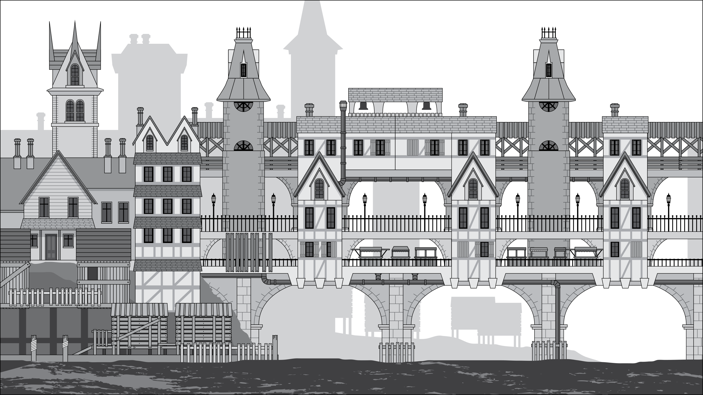
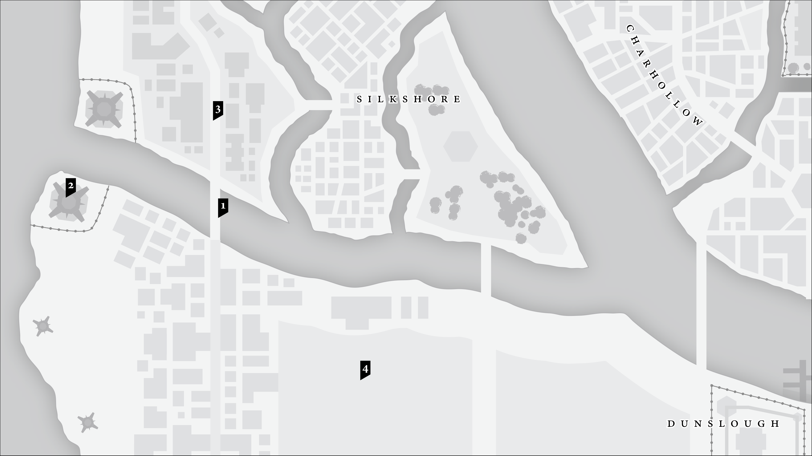
地区の概要（OVERVIEW）
バロウクレフトは、ダスクヴォールの放射エネルギー農場（Radiant energy farms）を管理する糧食省（Ministry of Provisions）の労働者や監督官たちが暮らす地区である。埃っぽい田園地帯であり、1〜2階建ての質素な木造建築が並び、大型の荷馬車が行き交えるよう幅広の未舗装路が通っている。バロウクレフトの農民たちは結束の固い家族ベースの氏族（クラン）を形成しており、都市の存続に不可欠な役割を担っていることに誇りを抱き、川の向こうの「都会者（シティ・フォーク）」とは一線を画している。誠実な商取引のためならよそ者も歓迎されるが、それ以外の目的で訪れる者には冷ややかな疑惑の目が向けられる。
主要地点（LANDMARKS）
-
1バロウ橋（Barrow Bridge）
市内にいくつかある住居付き橋梁の1つ。橋の上には住居、商店、露店が軒を連ねている。両岸の粗末な木造小屋では川漁師の一家が働いており、海へ通じる水路付近にゴミを漁りに集まる、大型で危険な野生の川ウナギを狩っている。
-
2雷撃塔（Lightning Tower）
ダスクヴォールの雷撃塔はエレクトロプラズム工学の驚異であり、強大なスパークライト（Sparkwrights）ギルドによる絶え間ない保守を必要とする。最大の塔は高さ400フィート（約120m）を超え、デスランズの飢えた霊魂を街の外に締め出す雷撃障壁（ライトニング・バリア）へ電力を供給するための発電機を内蔵している。
-
3バロウクレフト市場（Barrowcleft Market）
農園で採れた新鮮な農産物や加工品を販売する青空市場。醸造家、蒸留酒造り、織り手、染色工、ヤギ飼いなど関連業者も集まっている。屈強で結束の固いバロウクレフトの住民たちは犯罪組織の影響力を市場から締め出すことに成功しており、この街では珍しく公正な取引が行われる場所として名高い。
-
4放射エネルギー農場（Radiant Energy Farm）
放射エネルギーの驚くべき力によって、ダスクヴォールの暗闇の中でも作物を育てることができる。街の生命線はこの農場にかかっているため、繊細な放射ランプと灌漑システムは、特別に任命された警備隊の副官と糧食省の監督官によって昼夜監視されている。
著名人（NOTABLES）
- プリチャード主任監督官（Chief Prichard）：ダスクヴォールにおける糧食省の筆頭監督官。各地区への労働者と食糧配給を管理している。（計算高い、自信家、冷静）
- ヘスター・ヴェイル（Hester Vale）：最古の農家一族の女家長。「厳格だが公正」を絵に描いたような人物。（誇り高い、激しい、疑り深い）
- マーラ・キール（Mara Keel）：バロウクレフトの農業労働者の中に身を潜めている元密輸業者。（寡黙、秘密主義、忍耐強い）
ブライトストーンBRIGHTSTONE
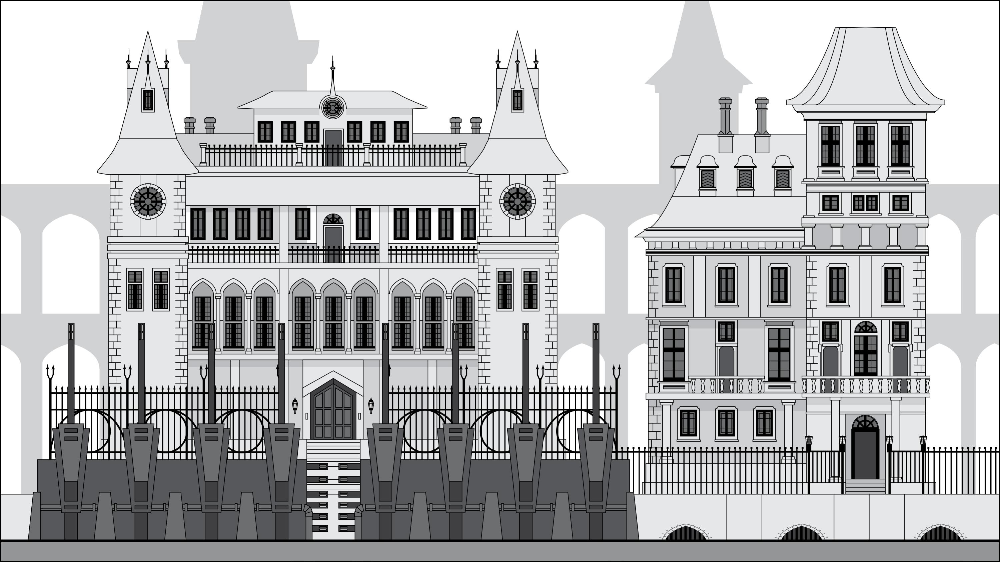
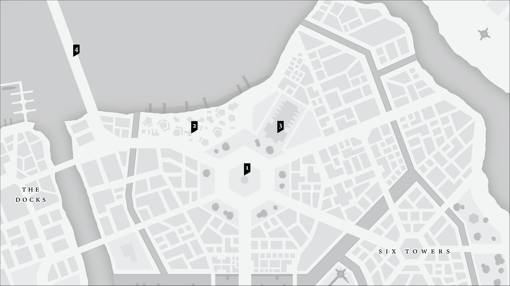
地区の概要（OVERVIEW）
ブライトストーンは、ダスクヴォールで最も裕福かつ影響力のある市民たちの多くが暮らす地区だ。通りは広く舗装され、明るい電灯に照らされている。運河は澄んで清潔で香料が撒かれており、邸宅はすべて上質な淡色の大理石ブロック、重厚な木材、精緻な鉄細工で造られている。放射エネルギーで育まれた手入れの行き届いた公園、豪奢なレストランやカフェ、宝石商や仕立て屋などの高級店が立ち並ぶ。露店商は禁止されているため、時折通る馬車や行進するブルーコートの巡回隊を除けば、穏やかで広々とした空気が漂っている。
主要地点（LANDMARKS）
-
1統一公園（Unity Park）
統一戦争（Unity War――誰に聞くかによっては「スコヴランド独立戦争」）における帝国の勝利を記念した巨大なモニュメントを擁する、壮麗な公園・噴水・ロータリー。
-
2銀市場（Silver Market）
ノース・フック海峡を見下ろす厳選された青空高級市場。かつて銀取引の主要市場だったことに由来し、現在は希少なイルヴィア産の絹織物、ダガー諸島の香辛料、馬商、馬車内装師、希少な錬金術蒸留液（市警備隊が見て見ぬふりをする違法な霊魂エッセンスも含む）などあらゆる贅沢品を扱う。
-
3至聖所（The Sanctorium）
「肉体の歓喜の教会（Church of the Ecstasy of the Flesh）」の総本山大聖堂。約500年前に皇帝がダスクヴォールを最後に訪れた際、自ら建立を命じた控え壁と尖塔のそびえる巨大建造物である。信徒たちは毎週集い、洗礼の儀式と、エレクトロプラズムによる野良霊魂の儀式的消滅を通じて自らを清める。地下墓地には名高く裕福な市民たちの遺灰が納められている。
-
4ボウモア橋（Bowmore Bridge）
輝く白い石と煌めく金属細工で造られたこの巨大建造物は、帝国最大の橋と言われている。ブライトストーンからホワイトクラウンへと至る全長にわたり、高級アパートと商店がずらりと並んでいる。
著名人（NOTABLES）
- ストラングフォード卿（Lord Strangford）：最大規模のリヴァイアサン・ハンター船団の1つを運営し、市議会議員を務め、歓喜の教会内の秘密結社の高位メンバーでもある。（秘密主義、計算高い、尊大）
- ボウモア司令官（Commander Bowmore）：ブライトストーンの治安警備隊最高責任者。何世紀も前にボウモア橋の建設に出資した一族であり、今も多くの要職を握る。（誇り高い、信念がある、顔が広い）
- ロラン・ウォット（Rolan Wott）：不動産・寄付金・金融訴訟を扱う有力な治安判事。豪華なパーティーを開くことで有名。（洒落ている、選民意識が強い、抜け目ない）
チャーホロウCHARHOLLOW
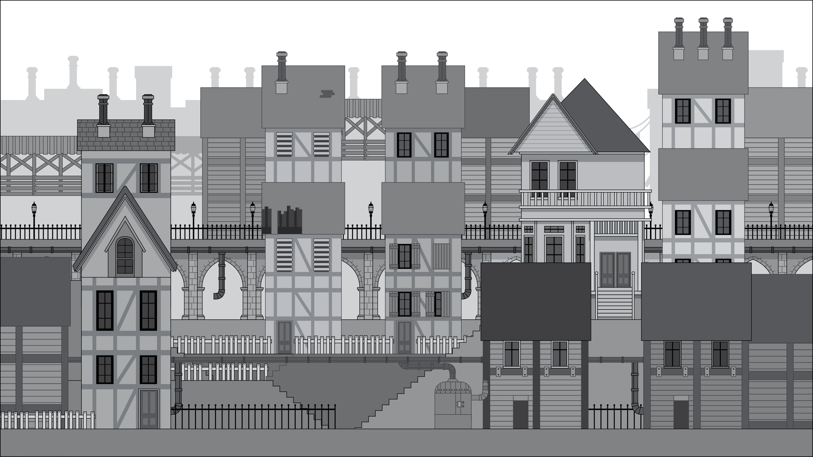
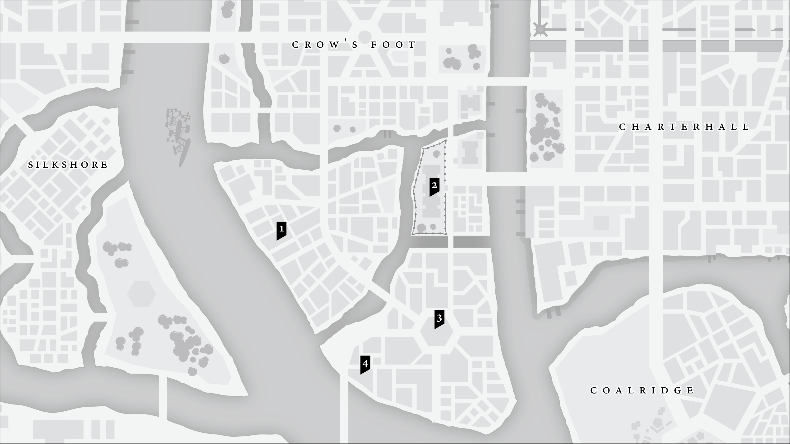
地区の概要（OVERVIEW）
この過密な地区には、街の労働力の大部分――使用人、港湾労働者、船乗り、家畜囲いやウナギ養殖場の作業員、辻馬車の御者など――が暮らしている。家賃は安く、騒がしく、狭苦しく、炊事の火や噴き出す蒸気管で蒸し暑いが、住民たちの間には他では見られない家族のような連帯感がある。チャーホロウの人々は境遇によって集まったものの、街の他の場所で当たり前になっている弱肉強食の冷酷さとは対照的に、互いに支え合い気遣い合う絆で結ばれた真の共同体を築いている。
主要地点（LANDMARKS）
-
1ザ・シーツ（The Sheets）
洗濯夫、仕立て屋、お針子たちが集まる一角で、建物間の路地は彼らの商売道具であるはためく布地で埋め尽くされている。労働者階級による無政府主義者たちの秘密結社がここで会合を開き、革命の計画を練っている。
-
2ストラングフォード邸（Strangford House）
強大なストラングフォード家の、柵に囲まれた壮麗な邸宅がチャーホロウを見下ろす私有島の丘に建っている。この地区の住民の多くはストラングフォードの工場や労役場で働いており、丘の上の屋敷をチラリと見るたびに呪いの視線（邪視）を投げかけずにはいられない。
-
3チャーホロウ市場（Charhollow Market）
開けた広場を埋め尽くす公設市場。地元コミュニティに向けて公正な価格とまともな品物を提供している。
-
4ケレンズ（Kellen's）
市内最古のパブの1つで、目の回るほど豊富なスコヴランドのエールとウイスキーを揃えている。貧富を問わず客が肩を並べ、酒とともに伝統料理と音楽を楽しんでいるが、近頃は覆面をした反スコヴランド人種差別主義者たちの標的にされ、「スコヴは出ていけ！」と叫びながら店を荒らしたり客に暴行を加えたりする事件が起きている。
著名人（NOTABLES）
- ハットン（Hutton）：スコヴランド難民で元兵士。現在は帝国におけるスコヴランド人の権利を政府に認めさせることを目指す無政府主義革命運動のリーダー。（勇敢、慈悲深い、賢明）
- ブリッグス（Briggs）：チャーホロウ市場の露店店主だが、それはこの地区の労働者階級の間に張り巡らされた噂屋・スパイ・暗号職人ネットワークの隠れ蓑であり、必要とする者にその働きを売っている。（秘密主義、抜け目ない、慎重）
- コーベン（Corben）：帝国に対する罪で逃亡中の元スコヴランド軍人。（タフ、無謀）
チャーターホールCHARTERHALL
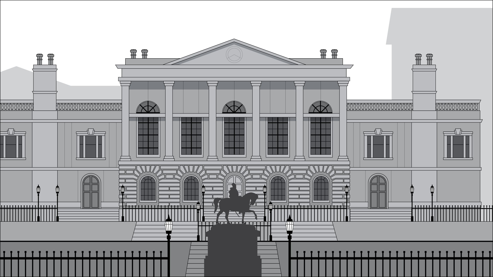
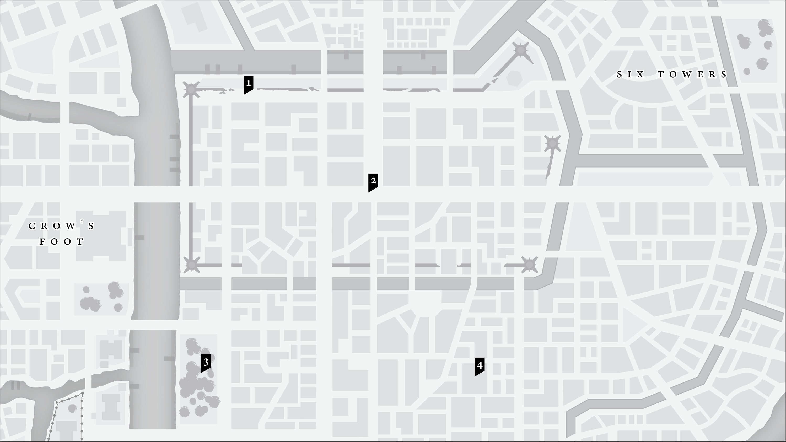
地区の概要（OVERVIEW）
チャーターホールは、大災厄（カタクリズム）以前の時代においてこの街で最初に大規模建築が行われた場所である。帝国初の雷撃障壁が築かれた古い城壁は、今も地区の周囲に半ば崩れた遺跡として残っている。現在この一帯には裁判所、許認可・税務局、銀行、公文書館といった政府の行政機関が集まっている。市の役人やチャーターホール大学の学生たちのほか、自らの富を目の届く範囲に置いて暮らすことを好む帝国産業の重鎮たちもここに居を構えている。
主要地点（LANDMARKS）
-
1チャーター城壁（Charter Wall）
古い城壁の廃墟沿いには芸術家コロニーが広がっている。音楽や彫刻を愛するボヘミアンな学生たちは、通常特定のパトロンや一族の庇護を受け、技を磨いてパトロンの教養のために芸術を生み出すことを期待されている。こうしたロマンチストな魂は、ダスクヴォールが提供するあらゆる悪徳の泉に飲み込まれてしまうことも多い。
-
2クラーク通り（Clerk Street）
地区の目抜き通りにはあらゆる種類の威圧的な政府庁舎が並び、いずれも高い鉄柵の奥に構えている。歩道を巡回するブルーコートと、王室保有地を警備する儀礼的な帝国騎兵隊が混在して警備にあたっている。
-
3ジャヤン公園（Jayan Park）
公園の名を冠された偉大な錬金術師は、太陽光も放射エネルギーもなしに本物の樹木を育てられる土壌と種子を生み出した。それらはあらゆる生物にとって恐ろしい猛毒であり決して触れてはならないが、100年以上経った今も美しく生い茂っている。
-
4チャーターホール大学（Charterhall University）
十数棟の建物が、地味に見えて実は格式高いこの教育機関の教室や学生寮へと改装されている。スパーククラフトの専門家を育成する巨大な「スパークライトの塔」が地区の上にそびえ立ち、激しい実習の際にはしばしば炎と煙を噴き上げる。
著名人（NOTABLES）
- レディ・ドレイク（Lady Drake）：街の犯罪に対して「話がわかる」治安判事――ただし違反者の財布が十分に厚ければの話だが。（柔軟、抜け目ない）
- ペンデリン卿（Lord Penderyn）：「残響の書庫（Archive of Echoes）」の主任学者。帝国政府の運営に資する遠き過去の知識を引き出すため、霊魂瓶に封じた古代の幽霊のコレクションを管理する勅許を得ている。しかし彼は独断でも霊に相談しており、霊界との交信を求める他のエリートや貴族たちのために反体制結社「残響の道（Path of Echoes）」を主宰している。（無謀、奇妙）
コールリッジCOALRIDGE
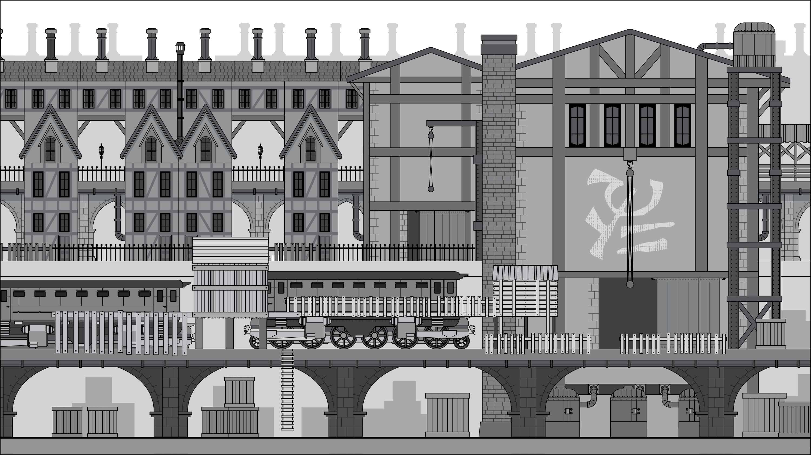
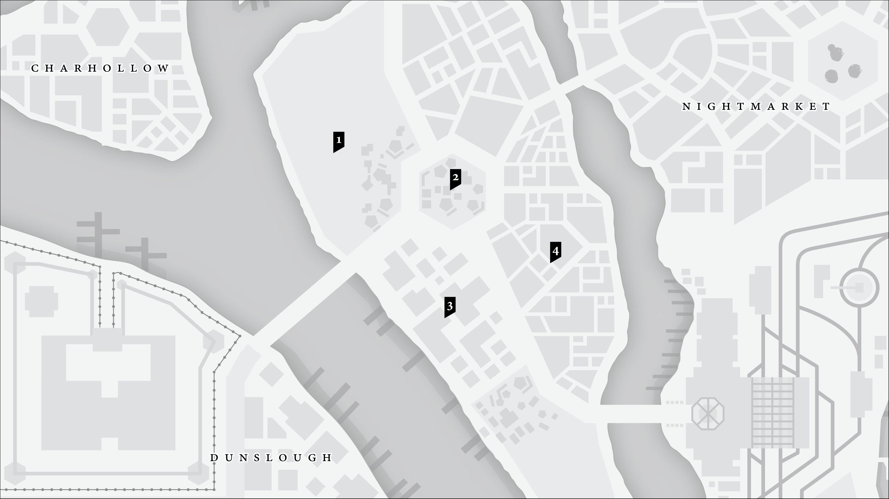
地区の概要（OVERVIEW）
コールリッジには、街の機械工、工場労働者、そして工場の大半が集まっている。狭苦しく、煤にむせび、騒々しく――濃い黒煙の雲、火花の雨、燃える燃え殻を吐き出し続けている。かつて石炭を運んだ古い高架鉄道線は、今ではガドック駅との間で重機や原材料を運搬しているが、古い線路や車両の多くは不法占拠者たちに明け渡され、仮設の住居へと改造されている。
主要地点（LANDMARKS）
-
1コールリッジ炭鉱（Coalridge Mine）
この川デルタ地帯で最初の恒久入植地があった場所。元々は古代スコヴ王国によって築かれ、「ドスコヴォル（Doskovol）」――文字通り「スコヴの石炭」と呼ばれた。帝国がエレクトロプラズム電力を広く採用するにつれ石炭需要は激減したものの、1000年以上経った今もこの炭鉱は稼働し続けている。
-
2旧操車場（The Old Rail Yard）
ガドック駅が建設される前、この工業用操車場は市内の商業の中心だった。現在、旧操車場は1日に数本の重い貨物列車を扱うのみで、古い鉄道車両の多くは放置されたままその場で錆びついている。
-
3製鉄工場群（The Ironworks）
巨大な工業用労役場が広大に連なる区画。冷酷な職長たちが年季奉公の労働者を24時間体制で酷使し、リヴァイアサン・ハンター船の建造・改装や帝国全土へ送り出す物資の膨大な生産ノルマに応え続けている。
-
4ブリックストン（Brickston）
ダスクヴォールで最も過密な住宅地。ブリックストンは幾層にも積み上がった多層レンガ長屋がひしめく迷宮である。裏社会で最もタフな悪党たちの多くがここ出身であり、暗い迷路の中で生き残りとギャング稼業の過酷な教訓を叩き込まれて育つ。
著名人（NOTABLES）
- スレイン親方（Master Slane）：ごく些細な違反に対しても過剰で残酷な罰を与えることで悪名高い工場職長。これまで何度も暗殺が企てられたが、すべて失敗に終わっている。彼は悪魔だという噂もある。（冷淡、残酷、サディスティック）
- ベル・ブローガン（Belle Brogan）：有望な労働組合の組織者として人気を集めているスコヴランド人の工場労働者。工場長が彼女を見せしめにしようとするのも時間の問題だ。（魅力的、自信家、大胆）
- ホッパー（Hopper）：地区の屋上に腰掛ける麻薬中毒者・ウィスパー・変人。コールリッジの地下深くから地平線の彼方へと伸びる「幽霊線路」と「霊魂列車」が見えると主張している。
クロウズ・フットCROW'S FOOT
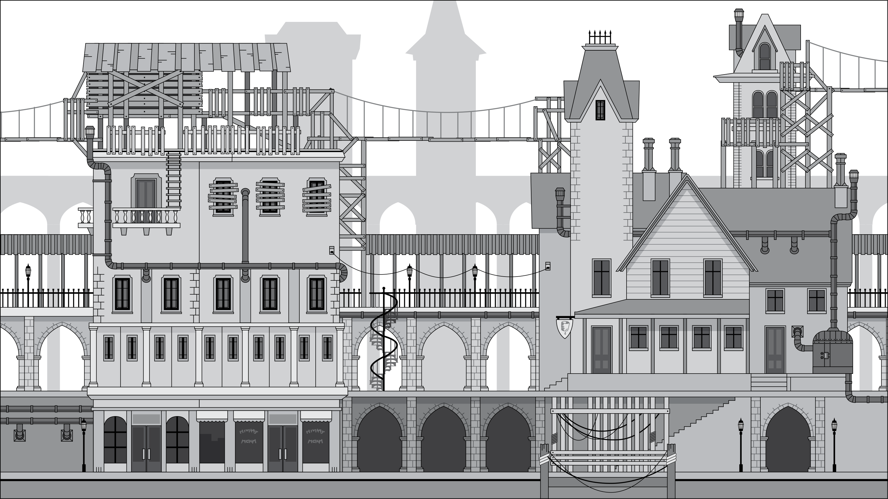
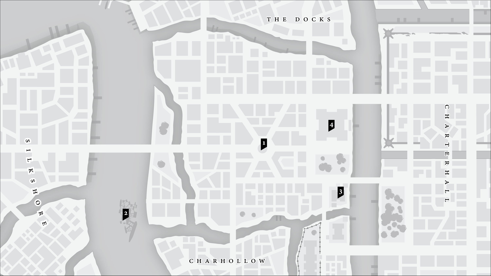
地区の概要（OVERVIEW）
クロウズ・フットは隣接する諸地区の性質を併せ持つ交差点である――シルクショアの違法な悪徳、ザ・ドックスの労働と交易、チャーホロウの貧困、そしてチャーターホールの古典建築。この地区は、終わりのない縄張り争いの中であらゆる大通りや街角を自らの領分と主張する、競合ストリート・ギャングとブルーコート分隊の雑多な見世物小屋によって繋ぎ止められ、同時に引き裂かれそうになっているパッチワークなのだ。
主要地点（LANDMARKS）
-
1カラスの巣（Crow's Nest）
大災厄以前から建つ古代の塔。かつては儀式の聖域、天文学者の実験室、ブルーコートの監視所として使われてきたが、現在は地区最大のギャング「カラス団（The Crows）」の本拠地となっている。
-
2タングルタウン（Tangletown）
数百年前に巨大なリヴァイアサン・ハンター船の1隻が川で半ば沈没した。以来、無数の小舟が船体に結びつけられ、ひとつの水上居住区へと発展した。タングルタウンはクロウズ・フットのストリート・ギャングたちの間で中立地帯とされており、ここでの暴力は一切禁じられている。
-
3ストラスミル・ハウス（Strathmill House）
クロウズ・フットの迷子や望まれざる孤児たちは、例外なくストラスミル・ハウスの廊下を通り抜ける。波止場やコールリッジの労役場で働くための世話をされ訓練を受ける者もいれば、地区のギャングが使う見張り役や使い走りの技を密かに仕込まれる者もいる――もちろんストラスミル・ハウスへの少額の手数料と引き換えに。
-
4紅帯剣術学院（Red Sash Sword Academy）
イルヴィア剣術「流星流（Falling Star style）」の道場へと改装された大邸宅。地区内で複数の高級麻薬窟を経営するイルヴィア系ギャング「レッド・サッシュ（The Red Sashes）」が、違法事業の本部兼表向きの隠れ蓑として所有している。
著名人（NOTABLES）
- ロックラン巡査部長（Sergeant Lochlan）：ダンヴィル警部に報告する、この地区の上級ブルーコート分隊長。柔軟で話がわかり、取れるときには賄賂や付け届けを受け取るが、必要なときには法を執行して見せしめを作る。（抜け目ない、タフ、威厳がある）
- リュイット、ジョル、マイラ、レイフ（Lewit, Jol, Myra, Reyf）：恐喝稼業を営むブルーコートの巡査たち。
- マーディン・ガル（Mardin Gull）：パブ「水漏れバケツ亭（The Leaky Bucket）」の店主。マーディンは長年（ロリックやリッサよりも前に）カラス団の頭目を務めていたが、今は悪党稼業から足を洗い快適な隠居生活を送っている。（魅力的、経験豊富、尊敬されている）
ザ・ドックスTHE DOCKS
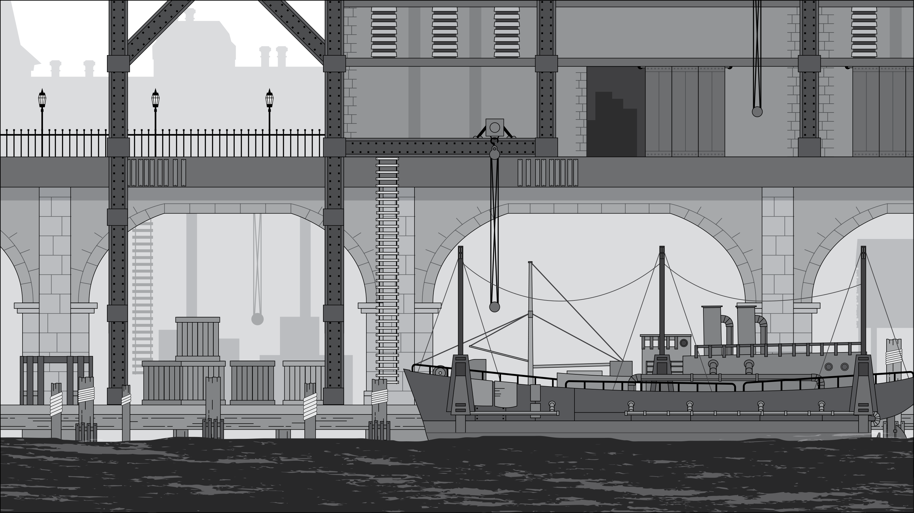
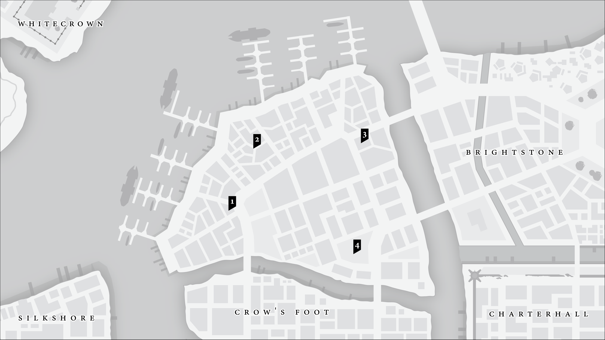
地区の概要（OVERVIEW）
ダスクヴォールの波止場は古く、その歴史は大災厄以前の時代にまで遡る。当時ここは、過酷な北海を渡らずにスコヴ王国と交易できる小さな入植地に過ぎなかった。今日では商業の一部が帝国の新たな電鉄網へと移ったものの、波止場は今なお貨物船、漁船、そしてこの街を動かし続ける原材料（リヴァイアサンの血）をもたらす格式高いリヴァイアサン・ハンター船で賑わっている。
主要地点（LANDMARKS）
-
1ノース・フック商会（The North Hook Company）
この壮麗で古風な邸宅は、帝国に現存する最古の海運・海洋探検企業の本社である。ノース・フック商会は巨大な商船隊を擁しており、公式には電鉄交易のみを管轄する運輸省（Ministry of Transport）の民間フロント企業に過ぎないのではないかと多くの者に囁かれている。同社の敵やライバル（そして詮索好きな記者）は姿を消す傾向にあるため、真相は誰にもわからない。
-
2インク小路（Ink Lane）
曲がりくねった裏通りには、街の多くの刺青師と数社の新聞社が軒を連ねており、皆でインクを大量共同購入して費用を折半している。あらゆる噂話やゴシップが集まる絶好の場所だ。
-
3ソルトフォーズ（Saltford's）
ダスクヴォールで最も悪名高い民間銀行の1つが入る、ずんぐりとした石造りの建物。波止場に近いことから、強盗に転身しようと思い立った酔っ払い船乗りのギャングに幾度となく襲われたが、そのすべてを撃退してきた――時には次の愚か者への見せしめとして、街灯に死体を吊るすことすらある。
-
4見世物動物苑（The Menagerie）
錆びついた動物小屋、水槽、けばけばしい看板が点在する、柵に囲まれた泥だらけの空き地。船乗りたちが航海中に拾ってきた奇妙な生き物を伝統的に預けていく場所であり、風変わりな経営者であるライ船長（Captain Rye）が即席の動物園展示に組み込んでいる。
著名人（NOTABLES）
- ヘルカー親方（Chief Helker）：最も影響力のある上級港湾労働者の1人。ヘルカーは波止場で絶大な発言力を持っており、彼に逆らえば積み荷を海に放り込まれる――下手すればお前自身も一緒にな。（慎重、強欲）
- トリス（Tris）：リヴァイアサンを直視して生きて帰った者にしか彫らない伝説的な刺青師。トリスから刺青を彫ってもらうことは、虚無の海の悪魔を狩るすべての者にとって通過儀礼である。（芸術的、人気者、洞察力がある）
ダンスラウDUNSLOUGH
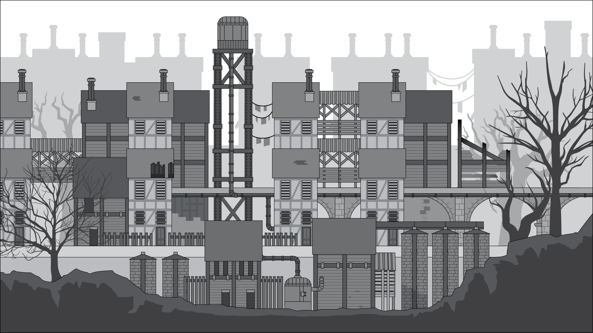
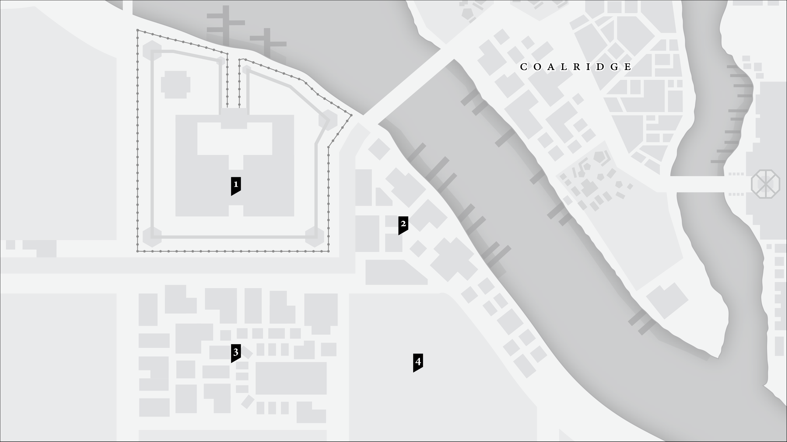
地区の概要（OVERVIEW）
ダンスラウは街の極貧層が集まるゲットーであり、同時にアイアンフック監獄（Ironhook Prison）とその労働キャンプがある場所でもある。元来このゲットーは囚人の家族が暮らす区画だったが、長年にわたる極度の貧困と行政の放置によって、泥にまみれた廃墟へと変わり果てた。ここでは悪循環が繰り返されている――絶望による犯罪、逮捕、投獄、そして再びダンスラウへの釈放。こうしてアイアンフックは搾取すべき労働力を無限に供給され続けているのだ。
主要地点（LANDMARKS）
-
1アイアンフック監獄（Ironhook Prison）
最も凶悪な（あるいは最も運の悪い）犯罪者が収監される、そびえ立つ金属の要塞。最も貧しい者はダンヴィル労働キャンプでの強制労働を強いられる。一方、最もコネの強い囚人は快適な監獄暮らしを送り、鉄格子の向こうから犯罪組織の運営を続けることすらある。
-
2ダンヴィル労働キャンプ（Dunvil Labor Camp）
アイアンフックの職員に賄賂を払えない貧しい囚人たちは、一日の大半をダンヴィル労働キャンプで苦役に従事し、鉄道駅行きの艀に貴重な鉱石を積み込んだり、「泥沼（The Mire）」から運び出された大岩を砕いたりして過ごす。
-
3ダンスラウ・ゲットー（Dunslough Ghetto）
街で最も困窮した人々が流れ着く場所であり、その日のパンを買うためだけのはした金で「泥沼」の作業に従事している。市はこの区画を監獄敷地の「排水溝（おこぼれ）」と見なしており、維持管理を一切行っていない。
-
4泥沼（The Mire）
巨大な泥の採掘場。「泥沼」は古代に何らかの天体が落下した跡であり、地中に多種多様な貴重な鉱石や宝石が埋め込まれて残っている。
著名人（NOTABLES）
- クロケット親方（Master Krocket）：アイアンフックが脱獄者の追跡や密輸品・地下トンネルの探知に使う、獰猛で唸り声を上げる猟犬の群れを管理する不快で脂ぎった髪のかかしのような男。彼の犬使いたちは労働キャンプ周辺やダンスラウ全域をうろつき、監獄とのコネを利用して便宜や賄賂を得ている。
ナイトマーケットNIGHTMARKET
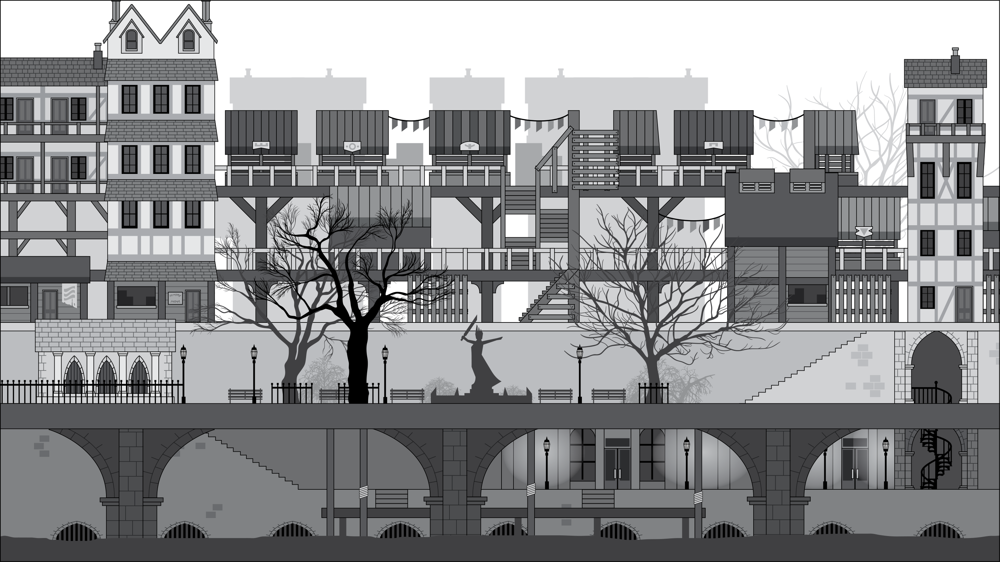
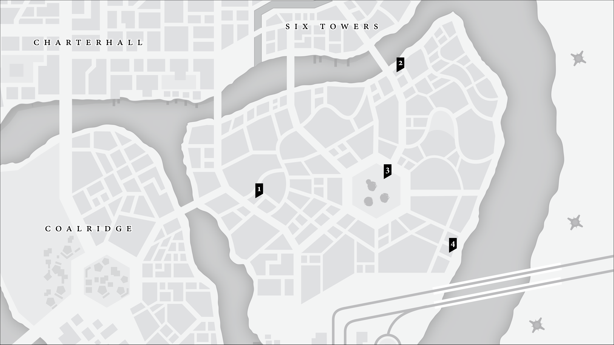
地区の概要（OVERVIEW）
ナイトマーケットは商業が支配する地区である。ガドック鉄道駅の近くにあり、帝国各地を走る貨物列車からダスクヴォールへ運ばれてくる異国情緒あふれる希少な商品の大部分を受け入れている。ナイトマーケットを故郷と呼ぶ市民たちは新たな「エリート」階級を形成している――貴族の血筋ではないものの、爵位なしに土地・地位・権力を主張する富裕層だ。地区では新築工事が進み、買えるだけの財力があるエリート向けに最新の設備をすべて備えた豪華な個人用タウンハウスが立ち並んでいる。
主要地点（LANDMARKS）
-
1ザ・ヴェイル（The Veil）
守秘義務の徹底と、秘術的あるいは風変わりな出自を持つ客に対する寛容な方針で知られる高級社交クラブ。経営者兼ホストのロラン・ヴォラリス（Rolan Volaris）は、悪魔の血が極めて特異な形で現れたティケロス人であり、腰から下が蛇の体になっている……と人は噂する。ヴォラリスが直接人前に姿を見せることは滅多にない。
-
2ダンドリッジ＆サンズ（Dundridge & Sons）
ダスクヴォール随一の仕立屋と多くの者に目されている老舗。ダンドリッジ家は300年以上にわたり、目の肥えた市民たちに最高級の衣服と装身具を提供してきた。伝説的な評判にもかかわらず、ダンドリッジの価格は非常に良心的である。
-
3ヴリーンの猟犬レース場（Vreen's Hound Races）
特別に交配された猟犬のレースは現在ダスクヴォールの上流階級で大流行している。「マスター・ヴリーン」を名乗るダガー諸島出身の詐欺師が、「帝国随一の猟犬レース場」を造るとして騙されやすい投資家たちから少なからぬ大金を巻き上げた。投資家たちはまだ一銭の配当も得ていないが、ヴリーンは「まもなく莫大な利益が転がり込む」と請け合っている。
-
4悪魔の歯亭（The Devil's Tooth）
錬金術調合薬の「裏メニュー」で知られる酒場。冒険心旺盛な精神探求者（サイコノート）たちは、女将ケンバーの居心地の良い店の比較的安全な環境で、あらゆる精神変容（あるいは霊魂変容）薬物を試すことができる。
著名人（NOTABLES）
- ジラ（Jira）：ダガー諸島産の上質な武器商人。ダスクの多くのストリート・タフから深く尊敬されており、「ジラの刃（Jira blade）」は誰もが憧れるステータスシンボルである。（大胆、タフ）
- レクルール（Leclure）：個人向けの贅沢品（石鹸、髪油、香水、上質な絹）を商い、占いにも手を染める女性。溺死した彼女の恋人が幽霊となって耳元で秘密を囁いているという噂がある。（抜け目ない、タフ、威厳がある）
- モーディス（Mordis）：幾重にも重ねたローブとフードの下に真の姿を隠している奇妙な商人。問い詰めもせずオカルトや秘術の盗品を買い取る故買屋でもある。（秘密主義、洞察力がある、秘術的）
シルクショアSILKSHORE
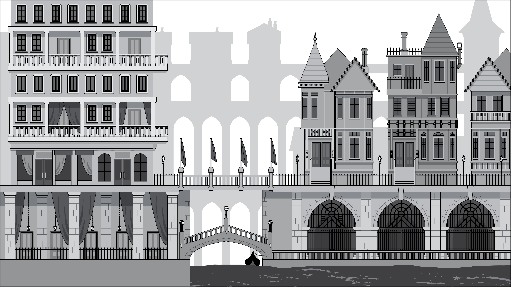
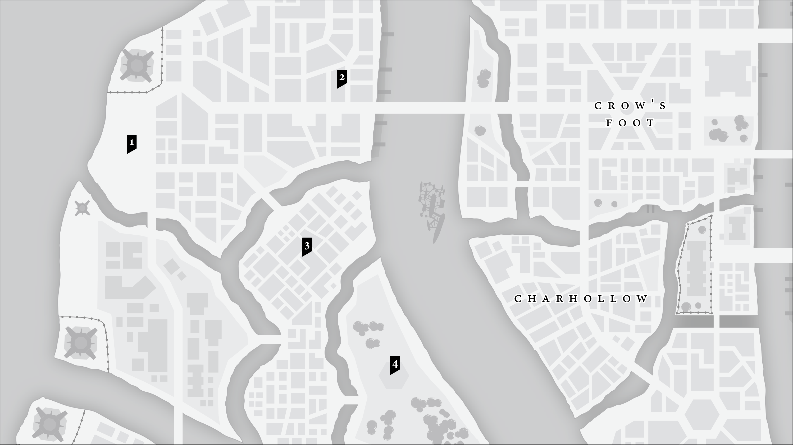
地区の概要（OVERVIEW）
幾十もの狭い運河が縦横に走るシルクショアは、この「赤ランプ街（歓楽街）」を訪れるほとんどの客がそうするように、ゴンドラで巡るのが最適な地区である。娼館、悪徳の巣窟、屋台、異国風の商店がすべて水辺に張り出すように建ち並び、何も尋ねることなく客の欲望を満たす準備を整えている。シルクショアは公然の放縦と密かな背徳の地であり、想像し得るあらゆる快楽――そして空想の限界を押し広げるような快楽までも――を提供している。
主要地点（LANDMARKS）
-
1スパーク・グラウンズ（The Spark Grounds）
雷撃塔のパチパチと弾ける閃光の下、この開けた広場には命知らずの曲芸師やサーカス芸人たちのスタントを見ようと群衆が集まる。その中には、電弧を引き寄せて花火のような光景を演出するため金属片を飾り付けた有人凧で空を舞う、悪名高い「スパーク・フライヤー」たちも含まれる。
-
2ザ・イーズ（The Ease）
地区北部は馬車よりもゴンドラの方が移動しやすく、運河へ通じる数十の入り口の両脇には、色付きの電灯や翻る旗で商売を宣伝する商店や娼館が立ち並んでいる。
-
3フォグクレスト（Fogcrest）
「通り」を構成する狭い階段の迷路の中に長屋がぎっしり詰め込まれた、険しく尖った丘の頂。芸術家、自由思想家、幻覚探求者、哲学者たちが集うボヘミアンなコミュニティである。
-
4アンカヤット公園（Ankhayat Park）
豪奢に造園されたこの空間は市内最大の広場であり、年間を通じて多くの公的祝祭や催しが開かれる。公園の名を冠されたイルヴィア人貴族は、この公園に鷹の飼育場と上質な馬の厩舎を構えており、時に貴族たちのために鷹狩りを催す。
著名人（NOTABLES）
- レヴィラ（Levyra）：霊魂瓶に入った幽霊を持ち込むよう客に勧め、その霊を自らに憑依させて最後の言葉を交わさせた後、幽霊を「解放」する霊媒師（実際にはすぐ近くに待機しているスピリット・ワーデンに引き渡す）。
- ヘレン（Helene）：カジノ「銀牡鹿亭（Silver Stag Casino）」の優雅で謎めいた女主人。帝国以前のカエデの時代に生きていればセヴェロスの女王になっていたはずだ、と人々は語る。
- マダム・テスリン（Madame Tesslyn）：市内最古にして最も格式ある娼館「赤ランプ（The Red Lamp）」を経営している。
シックス・タワーズSIX TOWERS
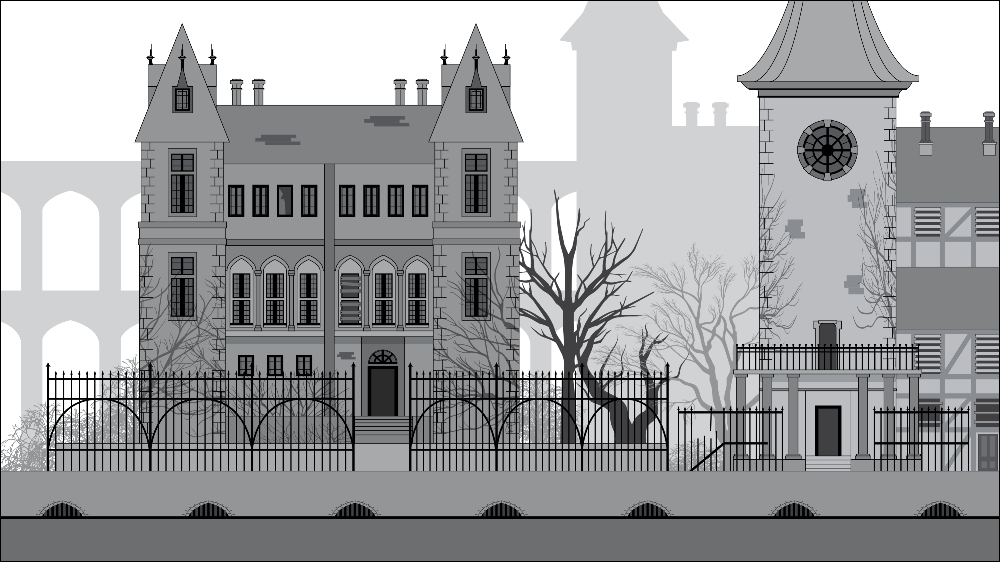
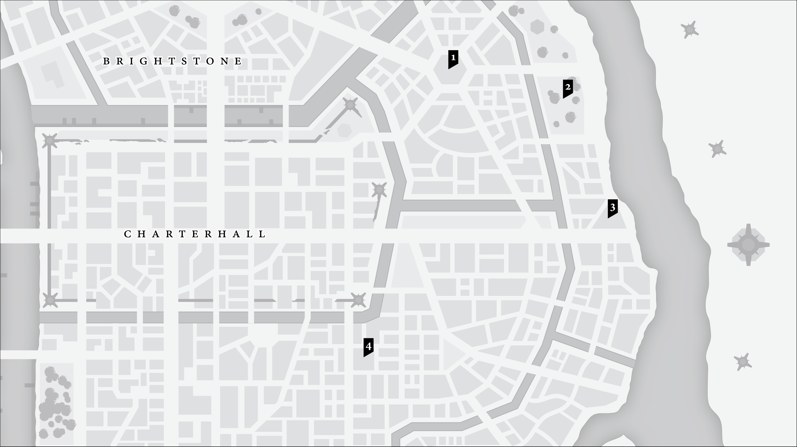
地区の概要（OVERVIEW）
かつて格式を誇ったこの地区は、何世紀もの時を経て往時の淡い面影へと色褪せてしまった。地区名の由来となった「6つの塔」は、もともとダスクヴォール最初の貴族家門たちの壮麗な邸宅だった。しかし2つ（ボウモア邸とローワン邸）を除くすべてが売り払われて安アパートへと改装されるか、廃墟となって打ち捨てられてしまった。この地区には空虚で幽霊じみた空気が漂っており、広大な古い建物の多くは電気が通らず暗く沈み、広い石畳の通りはひび割れて歪み、雑草の生い茂る空き地では不法占拠者たちの焚き火がパチパチと音を立てている。
主要地点（LANDMARKS）
-
1ローワン邸（Rowan House）
元祖6つの塔のうち現存する1つ。この古風な建物は、堀、跳ね橋、矢狭間まで備えた歴史書に出てくる古城さながらの姿をしている。強大なローワン一族はこの要塞の内側から領地を統治しており、厚い石壁の守りの外へ出ることは滅多にない。
-
2ミストショア公園（Mistshore Park）
ダスク川の東支流とその向こうのデスランズを見渡す、暗く草木の生い茂った空間。古い民謡では、結ばれることのない若い恋人たちがこの公園で身を投げたと歌われている。真偽はどうあれ、今この公園に霊が憑いていることだけは確かだ。
-
3スカーロック邸（Scurlock Manor）
スカーロック家は何世紀も前にダスクヴォールへやって来て、かつては街で絶大な勢力を誇ったが、何らかの呪いか災厄が一族を襲った。この崩れかけた邸宅と絡み合う蔓草が、彼らの栄華の残りすべてである。今も若い甥か従兄弟がそこに住んでいると言われているが、スカーロック卿自身はもっと上等な住まいへと移っている。
-
4泣く淑女の腕（Arms of the Weeping Lady）
かつてオペラハウスだったこの壮麗な建物は、現在「泣く淑女」の慈善団体が運営する極貧層向けの炊き出し所兼簡易宿泊所となっている。地元の人々は、この建物をチャーターホールとシックス・タワーズの境界線の目印にしている。
著名人（NOTABLES）
- マザー・ナリア（Mother Narya）：慈善施設「泣く淑女の腕」を取り仕切っている。（親切、忍耐強い）
- シェフ・ロゼル（Chef Roselle）：市内屈指の料理人の1人。幽霊の出るシックス・タワーズの通りまで足を運ぶ価値のある伝説のレストラン「黄金のプラム（Golden Plum）」を今も営んでいる。（創造的、洞察力がある、友好的）
- フリント（Flint）：使用禁止になった廃邸宅を拠点に霊魂を売買する霊魂密売人。（奇妙、計算高い、疑り深い）
ホワイトクラウンWHITECROWN
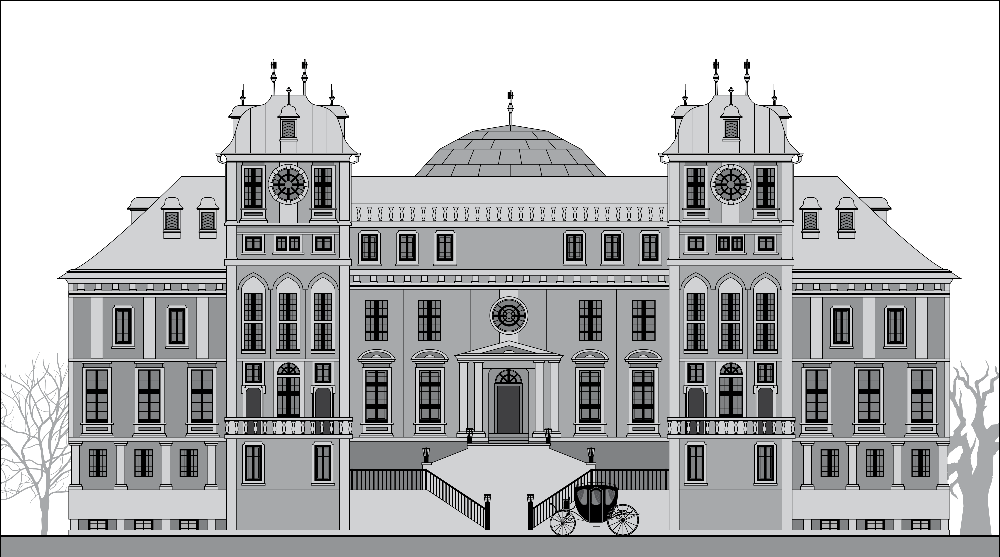
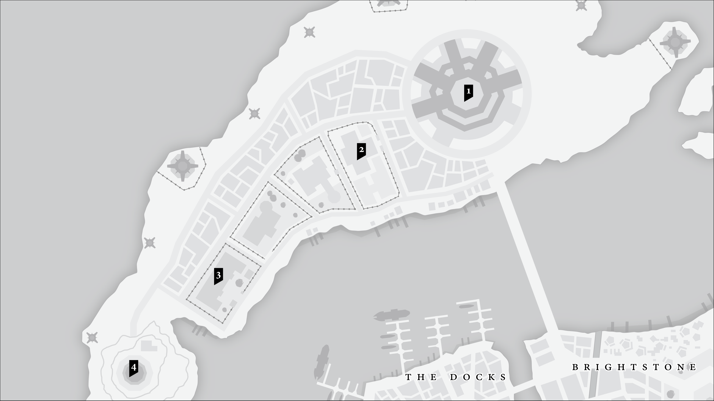
地区の概要（OVERVIEW）
ホワイトクラウンは、本土からノース・フック海峡を挟んだ向かいの島にある壮大な頂の上に鎮座している。この高みから総督の要塞が街全体を見下ろし、その両脇を最も強大な貴族たちの広大な邸宅群と、豪奢に整えられたダスクヴォール学院のキャンパスが固めている。ホワイトクラウンはそれ自体が1つの豊かで隔絶された世界であり、市民のほとんどは、そこにそびえる富と権力の輝く尖塔へと続く橋を生涯一度も渡ることなく一生を終える。
主要地点（LANDMARKS）
-
1総督要塞（Lord Governor's Stronghold）
皇帝はもともと、スコヴランド侵攻に先立ちノース・フックに駐留する帝国軍の守備隊拠点としてこの要塞を建造させた。現在は総督とその家族、そして政府の補佐官たちが暮らしている。
-
2ダスクヴォール学院（Doskvol Academy）
帝国有数の学府と称えられるこの学校は、リヴァイアサン・ハンター船の船長および上級士官の養成機関として最もよく知られている。狩りで命を落とした哀れな者たちの穴を埋めるため、新兵のための訓練航海が一年中行われている。
-
3筆頭監視官の館（Master Warden's Estate）
この巨大な要塞化された邸宅は、スピリット・ワーデン（霊魂監視官）司令官の居館であり、彼らの主要な訓練施設でもある。一部の霊魂はベルウェザー火葬場で破壊されず――未知の目的のためにここへ運ばれているという噂がある。
-
4ノース・フック灯台（North Hook Lighthouse）
この古代の建造物は、ダスクヴォールを取り囲む虚無の海の暗闇の奥深くまで、何百マイルも先を照らす航行灯標として機能するエレクトロプラズム装置へと改造されている。
著名人（NOTABLES）
- マエストロ・ヘレレン（Maestro Helleren）：街のエリートたちの最高峰の公演会場である「尖塔庭園劇場（Spiregarden Theater）」の上級作曲家兼指揮者。（誠実、劇的）
- レディ・フレイラ（Lady Freyla）：帝国随一のソムリエと評される女性。高級店「皇帝の樽（Emperor's Cask）」で、それにふさわしいごく限られた客にのみ給仕する。（博識、教養がある、魅力的）